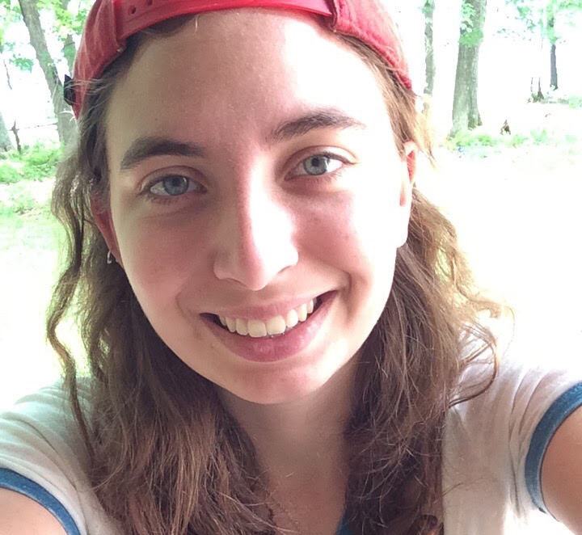

Name: Joseph Bretz
Hometown: Hamilton, OH
Major: Interactive Media Studies, minor in Music Composition
Field of Interest: Sound Design for Games
Hobbies: Video games, music, reading
Favorite Dog Breed: Basset hounds!
Jenni Bojanin
Scrum Master
Experienced Digital Specialist with a demonstrated history of working in the marketing and advertising industry. Skilled in Search Engine Optimization, Digital Marketing, Sales Operations, and Adobe Creative Cloud. Strong marketing professional with a Bachelor of Arts - BA focused in Interactive Media Studies, Entrepreneurship Minor from Miami University.
DogHouse Development Team
Connor Matheny
My name is Connor Matheny and I am a web developer here at DogHouse. I’m from Stamford, Connecticut (the same one from The Office), but currently live in Oxford, Ohio. I am majoring in Interactive Media Studies at Miami University, focusing on front-end development and computer programming. My hobbies include DJing, boxing, hockey and music production. My favorite dog breed is German Shepherd.

Emma Walker
My name is Emma Walker and I am a web developer here at DogHouse. I was born and raised in Columbus, OH and currently attend Miami University where I am majoring in Interactive Media Studies. I work on front-end development, graphic design, user experience design, and mobile UI design. I spend my time drumming, watching movies, and hanging out with my college buddies. My favorite breed of dog is the Great Pyrenees!
Wilson Russell
My name is Wilson Russell and I’m a web developer here at Doghouse. I’ve been all over the east coast, but I’ve spent many years now in Mason, Ohio. Currently I live in Oxford, Ohio, studying at Miami University. I tend to work more on the back-end of things, developing code and page layout. I’m big on games, books, and working on model kits. My favorite breed of dog are Siberian Huskies and Alaskan Malamutes.